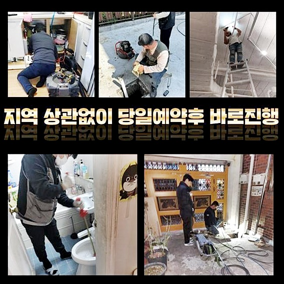
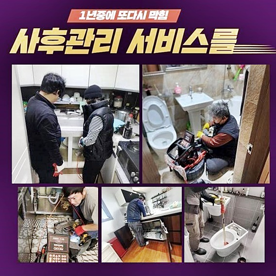
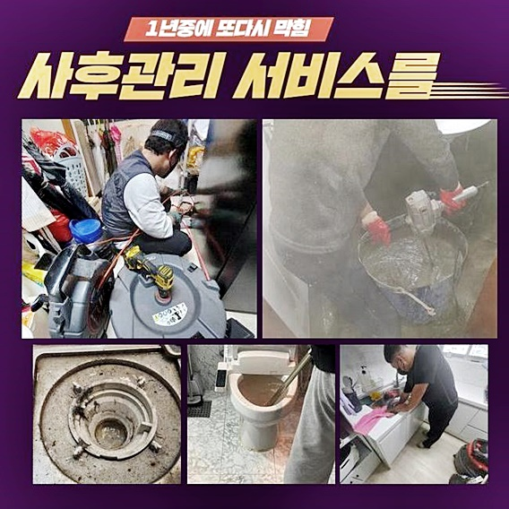
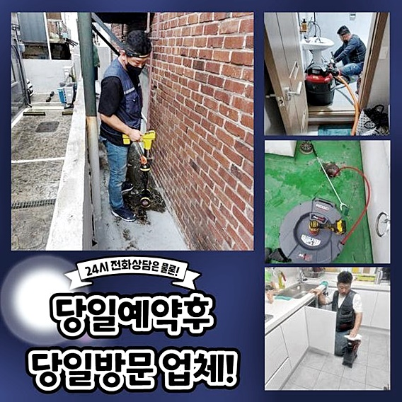
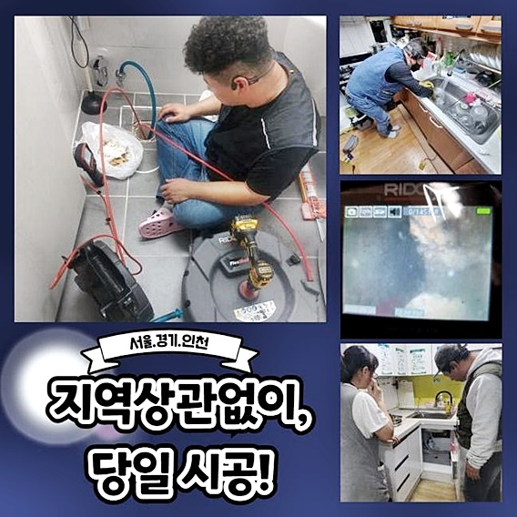

🏠 중앙동세탁실역류 세교동 냄새차단 배관막힘
용인 중앙동 싱크대막힘 전문 시공 후기

📋 작업 개요
- 위치: 용인 중앙동, 중앙동, 용인
- 서비스 유형: 싱크대막힘, 배관막힘, 맨홀막힘, 역류해결, 배관청소, 고압세척, 악취차단
- 작업 일시: 2024. 9. 13. 14:46
- 업체명: 하수구수사대 (010-5615-2118)
🔍 문제 상황
중앙동세탁실역류 세교동 냄새차단 배관막힘
오수가 순탄하게 흘러가지 않는 경우 하수로의 문제뿐만이 아니고 건물안의 일반영업장이나 주거지에도 더많은 손해들을 전가시킵니다
이런 현장과 같은 일을 수리하고자 하신다면 체계적인 전문가들의 작업과정이 필수요소겠지요?
하수관에 이상현상이 생겨 처리하는 과정중에 다른 잠재적인 문제들을 앞서서 알게되는 경우들도 종종 생겼습니다
하수관의 안쪽부위를 검사하며 예상할 수 없었던 피해를 사전에 알 수 있고 주기적인 배수관 청소를 시행해 설비의 적정수명을 연장할수 있게 도와주고 배수로의 노후화를 대비하고 파악합니다
불순물이 모이게 된 물은 중요배수로를 거치고 난 후 외벽으로 흘러가게 되죠
그런 이유로 주요한 배수관이 오염물로 꽉차게 된다면 아랫층에 위치한 집은 오염된 하수가 범람하는 일들이 일어날 수도있습니다
말씀드린 사태가 발생된 경우엔 신속한 조치들이 요구됩니다
최근 메인 배관 청소를 받아보았지만 아랫층 집에서 역류 문제들이 발견되어 메인의 배수관 정밀진단을 원하신다는 연락을 받았어요
배수로의 막힘 수위가 꽤 심했던 이유로 아랫층 집으로 역류현상이 진행됐는데 빈틈없는 확인을 위해 배수관의 여러 중요부위 모두 놓치지 않고 체크할수 있도록 필요한 작업들을 지시했습니다

🔎 원인 분석
💡 전문가 진단: 정밀 진단 장비를 사용하여 슬러지의 고착 여부를 판명하고 타격/세척 작업을 실시했습니다.
배수관에 역류되는 현상이 발견됐다면 어떠한 문제점이 발생하게 된건지 끈기있게 알아보는것이 요구되겠죠
초반에는 노폐물이 오랜시간 굳어버려 제거해내는게 아주 힘든 과정이였는데요 이런 경우에 사용하는 샤프트기계를 써서 분쇄 시키는 과정들을 먼저 이어나갔습니다
이후 작업으로 강한압으로 하수를 분사해 정상적으로 배출되지 못한 물때등을 비롯한 많은 노폐물을 전체적으로 없애는 과정들을 했습니다
일상속에서 배관문제로 발생하는 불편한 사건들과 이로인한 비용문제는 심각한 사안이실 거예요다
가게나 사회의 공공시설에서 하수라인의 오류들로 장사를 할 수 없게 하고 이와같은 문제해결까지 오랜시간이 요구되어집니다
빠른 시간내에 해당사태를 찾아내지 못하면 더 큰 문제로 이어지게돼서 부담되는 비용이 더많이 발생하게 됩니다
상업시설이나 근린공공 시설에서 배수관이 역류하는 경우 큰 해당사태를 발생시키기 때문에 이를 처리하고자 알아보신다면 전문적인 업체들의 정밀검사를 먼저 시행하셔야 해요
버리게되는 소량의 쓰레기를 배수설비에 흘려넣는 일들이 없어야하며 하수관이 있는 곳을 깨끗하게 이용하는게 요구되겠죠
원만한 물의 흐름을 위해서 일정한 점검으로 인하여 배관 문제들을 미연에 대처하는것이 중요하게 됩니다
썩은 오수로부터 맡게되는 지독한냄새는 의뢰인에게 트라우마적인 감정을 느끼게하고 육체적으로도 해로운 요소가 있습니다
주로 매장의 설비는 손님들의 이용거부의 이유로 적용될 수도 있기때문에 재빨리 손봐야합니다

🔧 작업 과정
하수시스템이 오류를 일으키는 경우는 다양한 장소들에서 흔히 발견되는 일들이지만 가게들이나 공공의 시설들에서 더 큰일로 다가옵니다
비슷한 어려움이 발생하게 되면 재빨리 점검을 받아보고 처리를 하는것이 요구되겠죠
고압력의 세정기는 케이블로 인해 터널같은 하수시스템의 내부면을 깊은곳까지 닦아내고 고압의 물을 이용하여 크기가 큰 이물질도 배출시킵니다
이를 통해 하수관 내부쪽의 딱딱한 불순물을 깨끗하게 청소했으며 건물외벽으로 내보내는 배수관으로 흐르며 불순물을 정상적인 순환방식으로 배출시킵니다
배관 피해를 방지하기 위해서 정기적으로 배수구 주변을 온수를 이용해 세척하고 남는 찌꺼기 없이 배출되게끔 유의하시기 바랍니다
배수관이 노화 되는만큼 오염물이 축적되고 배관 내벽에 흡집이 나게되서, 반복적으로 확인하고 수리하는게 요구되겠죠
결론적으로 배관 피해를 미리 막고자 하신다면 일상적인 관리들이 필요시 됩니다
첫번째 현장을 종료한 후에 이후에 도착한 가정집은 배관 악취를 막는 장치 속에 다량의 오염물이 쌓이고 있어서 하수가 순조롭게 내려가지 못했어요
불순물을 떼어내기가 위해 샤프트기기를 이용하면서 분쇄 시키는 작업들을 진행하게 되었어요
초반에는 꽉 막힌 곳이 다발성이라 힘들었지만 깎아낸 노폐물을 밖으로 내보내며 깊숙하게 유도를 하며 과정을 시행하게 되었죠
역류가 심각할땐 앞쪽과 뒷쪽에 동시에 작업하며 파쇄시키는게 최선의 방법입니다
강력한 수압으로 내려보내는 작업은 피해를 야기할 수 있어서 전문적인 기술이 우선시 되었습니다
점검을 해보니 내부뿐만 아니라 외부배수관도 문제부위가 심각한 것을 확인할 수 있었습니다
작업의 착수를 시작하려 맨홀뚜껑들을 열고 진입하였습니다
하수관이 넗은 상태여서 높은 압력이 가능한 동력발생기를 쓰면서 침전물을 제거해내는 작업들이 필요하게 됩니다
생활속에서 음식에서 나오는 기름기를 하수시스템에 버리게되는 행위들이 불러오는 결과를 관심갖지 않아요


✅ 작업 완료
생활 하시면서 쓰고남은 이물질을 싱크대등에 흘려 집어넣는 것이 큰일이 아니다 생각하게 되겠지만 실상은 배수로에 오물이 축적돼서 큰 역류현상이 일어난다는 것을 반드시 명심하세요
그다음 많이 일어나는 사례를 말씀드리자면 딱딱한 건물일수록 배수관의 노후화가 여기저기서 나타나 역류가 자주 야기되기도 합니다
이때 고압을 이용한 작업들은 문제상태에 맟춰서 과정들을 진행시켜야 하기때문에 여러크기의 배수구같은 설비는 세밀하게 진행 되어야만 연관되는 문제들이 발생되지 않습니다
아까 보신 작업상황은 오물로 두껍게 층을 이룬 하수로를 고압의 기계를 사용하여 확실하게 제거할 수 있었습니다
고압의 세척장비는 높은가격의 기계로서 전문기술을 갖추지 않은 보통의 이용자가 사용하게 되신다면 하수로에 피해를 주는 경우가 많으니 꼭! 전문가들의 수리를 요청하시길 바라겠습니다!



⚠️ 주방 싱크대 배관 막힘 예방 수칙
- ✅ 기름기가 묻은 식기나 프라이팬은 설거지 전 키친타올로 반드시 기름때를 닦아내세요.
- ✅ 주기적으로 싱크대 개수대에 뜨거운 물을 가득 받아 한 번에 내려 배관 내부 기름을 씻어내세요.
- ✅ 배수구 거름망을 미세한 필터로 사용하시고 음식물 찌꺼기가 틈으로 새어 들지 않게 관리하세요.
- ✅ 베이킹소다와 식초를 뜨거운 물과 함께 일주일에 한 번씩 부어주면 배관 살균과 막힘 예방에 좋습니다.
💡 핵심 정리
- 확실한 장비 작업(내시경 점검 및 샤프트 스케일링)으로 원인을 뿌리 뽑습니다.
- 작업 후 1년 이내에 동일한 부위 재발 시 100% 무상 A/S 서비스를 보장합니다.
- 서울 · 경기 · 인천 전 지역에 24시간 언제든 긴급 출동할 수 있도록 항시 대기 중입니다.
❓ 자주 묻는 질문 (FAQ)
🚨 용인 중앙동 싱크대막힘 문제로 고민이신가요?
정확한 원인 진단과 확실한 시공으로 재발 없는 해결을 약속드립니다.
24시간 긴급 출동 | 서울 · 경기 · 인천 전지역 | 1년 내 재발 시 무상 A/S